Avaleht
Sorteerimine
Ajalugu
Ürituste otsing
Kõik
Tasuta
Baarid
Mängud
Kultuur
Loodus
24/7
Aktiivne
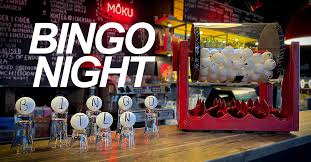
Möku bingo
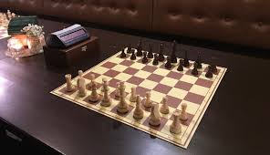
Püssika maleturniir
Eesti Rahva Muuseum
Seik karaoke
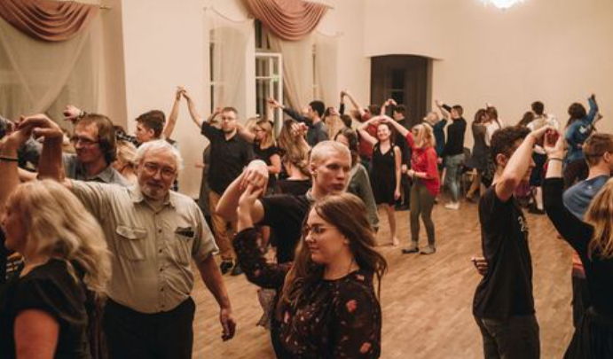
Tantsuõhtud
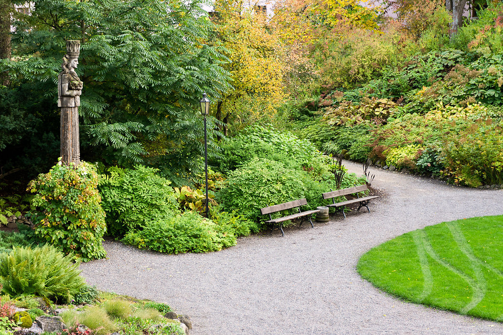
Botaanika aed
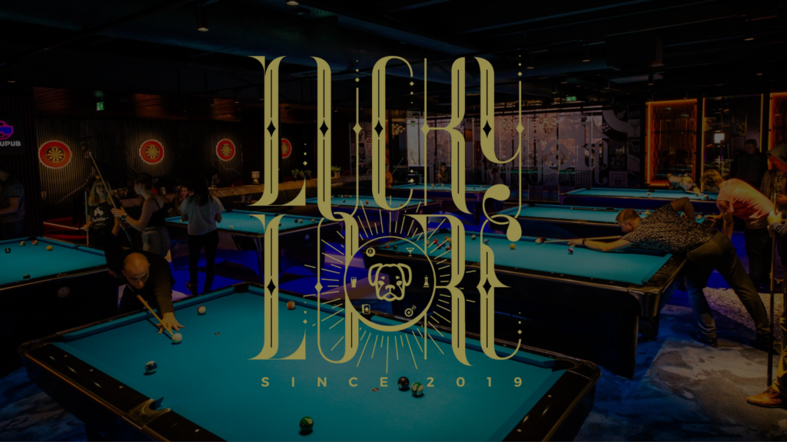
Lucy Loore
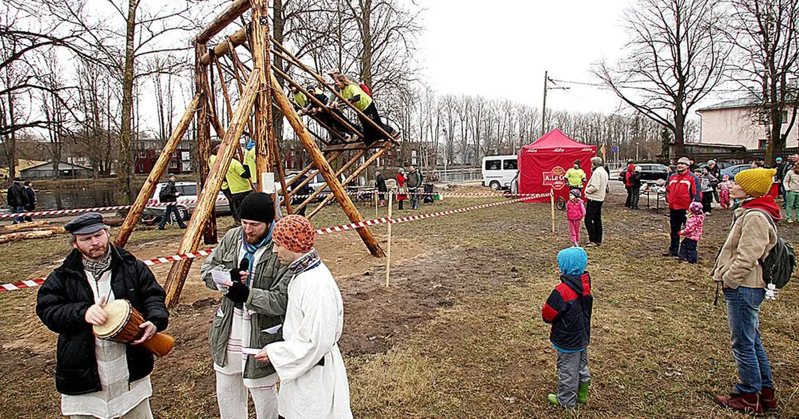
Supilinna külakiik
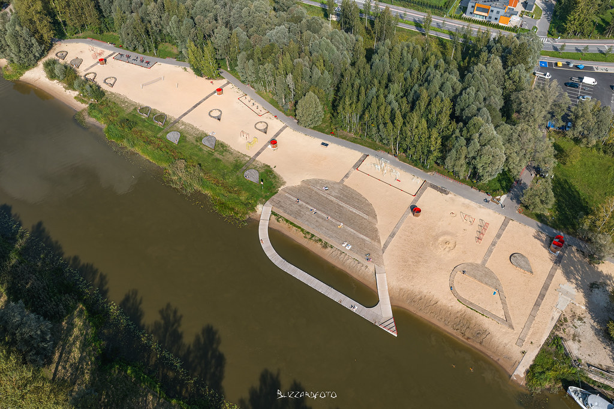
Emajõe rand
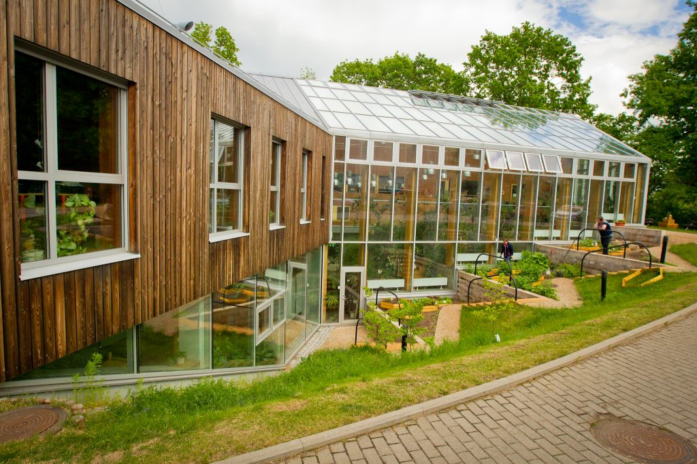
Tartu loodusmaja
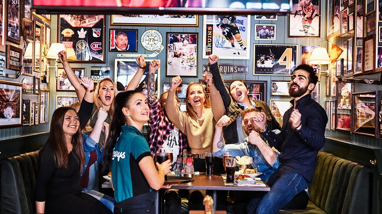
O'Learys
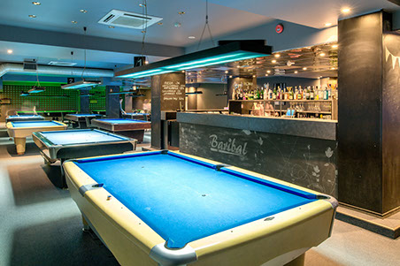
Baribal
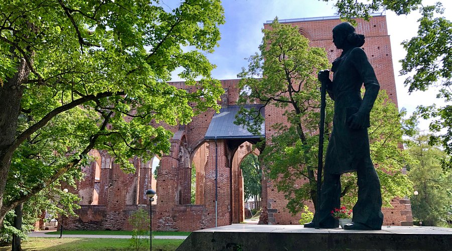
Toomemäe park
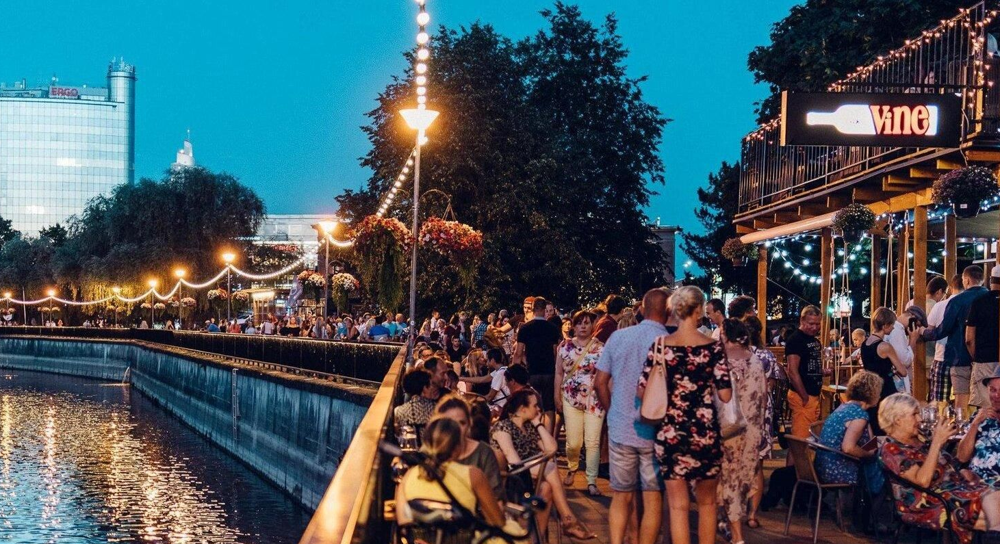
Emajõe promenaad
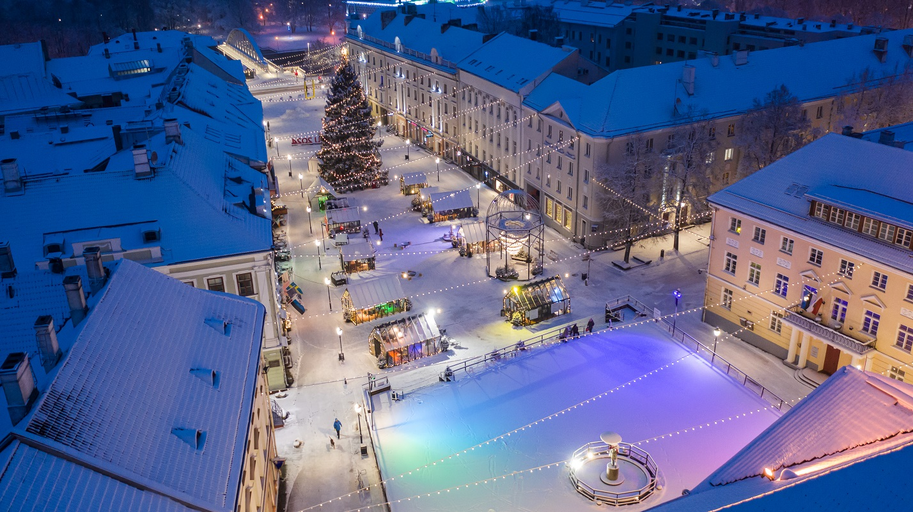
Raekoja uisuplats
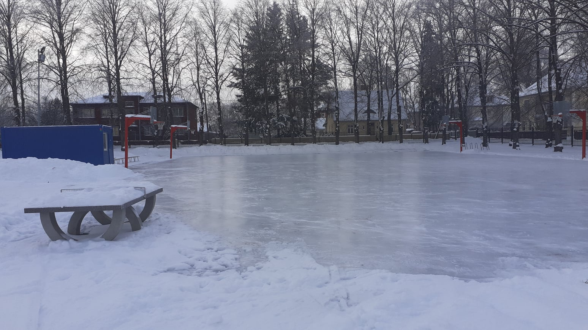
Tamme staadioni uisuväljak
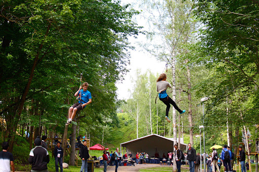
Tartu Seikluspark
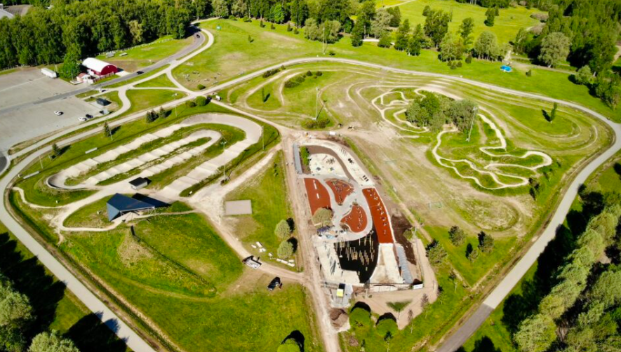
Tähtvere spordipark
X